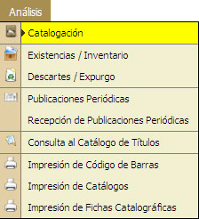
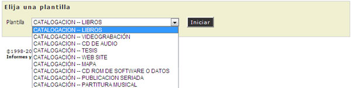
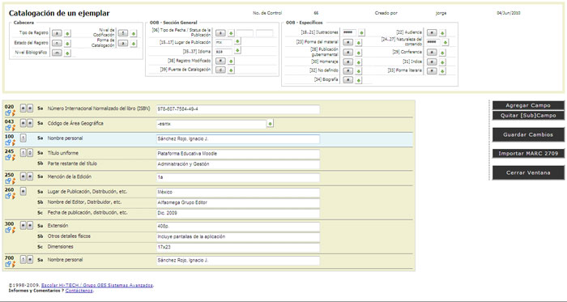
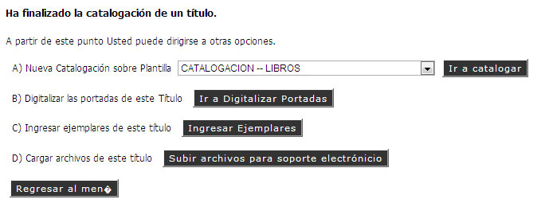

1.1. Catalogación
En esta opción el Administrador del Sistema podrá realizar la Captura de una Catalogación de un Título o Material.
REQUISITO: Para Realizar una Catalogación, el usuario deberá contar con los susficientes privilegios.

- Seleccionar la Plantilla de captura para iniciar la catalogación.
- Hacer "Clic" en la opción [Iniciar].

- Se inicirá la Catalogación de un Ejemplar.
- Registrar los Datos correspondientes, tomando en cuenta el Formato MARC para la descripción de un Documento.
- Llenar los datos correspondientes en la Sección Cabecera.
- Tipo de Registro
- Estado de Registro
- Nivel Bibliográfico
- Llenar los datos correspondientes en la Sección General.
- Tipo de Fecha
- Lugar de Publicación
- Idioma
- Registro Modificado
- Fuente de Catalogación
- Llenar los datos correspondientes en la Sección Datos Específicos.
- Ilustraciones
- Homenaje
- Biográfia
- etc...
- Los campos mostrados para llenar, pueden ser Eliminados o se pueden Agregar más, esto va ha depender a las necesidades de la Institución.

- En la parte derecha de la pantalla, se tienen las diferentes opciones necesarias para la captura de información del Material las cuales son:
- [Agregar Campo]: Agrega un campo para captura necesario de algún dato específico.
- [Quitar SubCampos]: Elimina el campo seleccionado en caso de no ser necesario para la captura de información.
- [Guardar Cambios]: Guarda los Datos del Material Capturado.
- [Importar MARC 2709]: Importa un Catálogo en formato MARC que ya se tenga capturado en su código correspondiente y en extensión ".mrc".
- [Cerrar Ventana].
- Al finalizar la captura de los Datos hacer "Clic" en la opción [Guardar Cambios].
- Aparecerá un menú de opciones.
- A) Ir a a Catalogar: Carga una nueva platilla para captura de catalogación de un Nuevo Material
- B) Ir a Digitalizar Portada: Permite agregar la portada y contraportada del ejemplar.
- C) Ingresar Ejemplares: Permite ingresar nuevas copias del Material Catalogado disponibles para el proceso de Circulación
- D) Subir archivos para soporte electrónico: Permite agregar o subir archivos electrónicos del Material, (*.PDF *.DOC).
- Hacer "Clic" en la opción deseada y seguir las instrucciones de la opción seleccionada.

Vea También: Existencias e Inventarios.